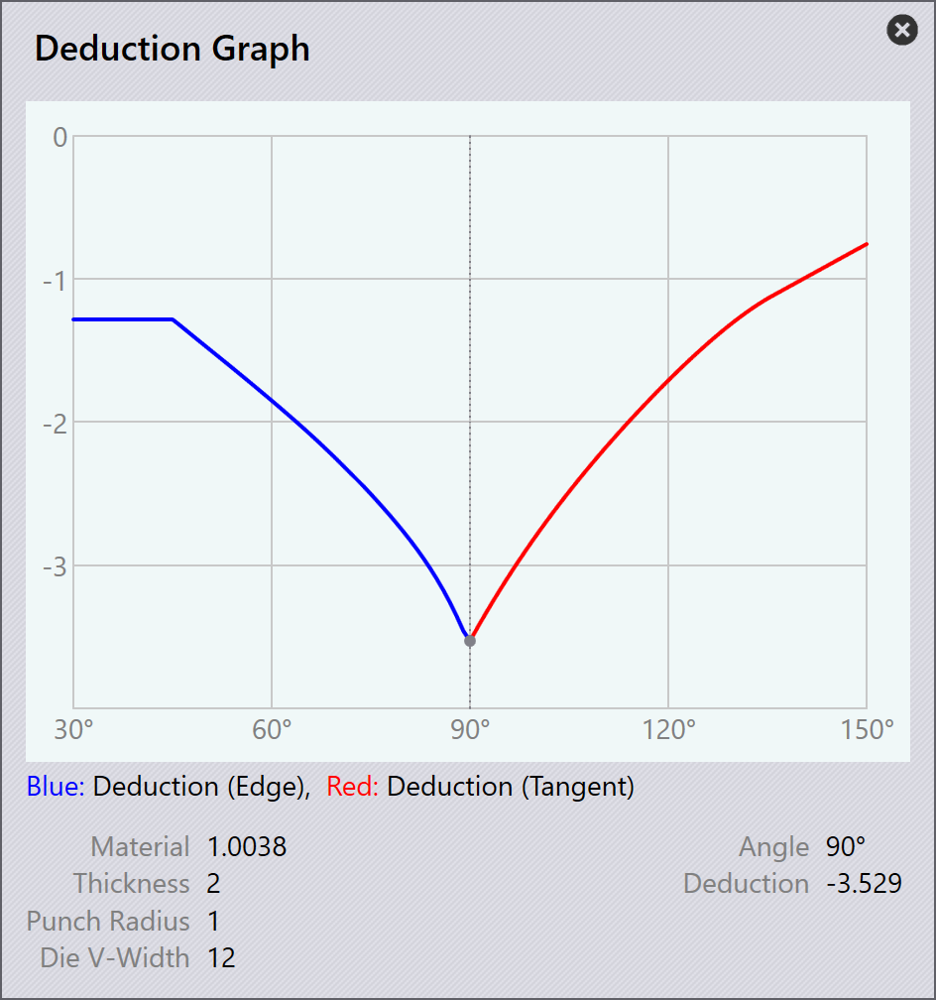

Bukningsfradrag
Bukningsfradrag bruges til at beregne den udviklede længde[1] af en metalplatedel. Det er nødvendigt for nøjagtigt at producere dele med de korrekte dimensioner efter bukning.
Bukningsfradrag tager højde for materialets strækning og kompression, der opstår under bukningsprocessen. Ved at bruge bukningsfradrag kan TecZone Bend justere længden af det flade mønster for at sikre, at den endelige bukkede del opfylder de specificerede dimensioner.
Bukningsfradrag kan variere baseret på faktorer såsom materialetype, tykkelse, bukningsradius og bukningsmetode.
Når en 3D-del importeres til TecZone Bend, beregner softwaren automatisk bukningsfradragene baseret på delens geometri og materialeegenskaber. Du kan også manuelt justere bukningsfradragene, hvis det er nødvendigt, for at finjustere længden af det flade mønster.
Indstillinger for bukningsfradrag
Brugerdefinerede bukningsfradrag kan indstilles i Bend Deductions-databasen. For at få adgang skal du klikke på ikonet database og vælge Bend Deductions.

Du kan Add tilføje et nyt bukningsfradragsscenarie eller vælge et eksisterende scenarie for at Edit redigere det eller slette det. Du kan også Copy kopiere et eksisterende scenarie for at oprette et nyt med lignende indstillinger.

Klik på Add for at oprette et nyt bukningsfradragsscenarie. Vælg og indtast følgende parametre:
-
Material: Vælg det materiale, som bukningsfradragene gælder for.
-
Thickness: Indstil tykkelsen af pladen, som bukningsfradragene gælder for.
-
Punch radius: Indstil det øvre værktøjs radius, som bukningsfradragene gælder for.
-
V-width type: Vælg typen af V-breddemåling, der bruges.
-
Die V-width: Indstil det nedre værktøjs bredde, som bukningsfradragene gælder for.
-
Die radius: Indstil det nedre værktøjs radius, som bukningsfradragene gælder for.
-
Die angle: Indstil det nedre værktøjs vinkel, som bukningsfradragene gælder for.
Klik på OK for at gemme det nye scenarie.
Derudover skal du vælge et bukningsfradragsscenarie og klikke på indstillingen … for at se yderligere indstillinger:

-
Graph: Viser en graf, der viser forholdet mellem bukningsvinkel og bukningsfradrag. Denne visuelle repræsentation hjælper med at forstå, hvordan bukningsfradrag ændrer sig med forskellige bukningsvinkler. Flyt markøren over grafens blå og røde linjer for at se specifikke værdier.

-
Import: Giver dig mulighed for at importere bukningsfradragsdata fra en ekstern CSV-fil.
-
Export: Giver dig mulighed for at eksportere de aktuelle bukningsfradragsdata til en CSV-fil til backup eller delingformål.
-
3rd party: Giver muligheder for at importere bukningsfradragsdata fra tredjepartssoftware eller -kilder.
Bukningsfradragstyper
TecZone Bend understøtter tre typer bukningsfradrag: Air Bending, Folding og Coining.
Hver type har sit eget sæt parametre og beregninger for nøjagtigt at bestemme bukningsfradragene baseret på den anvendte bukningsmetode.
Air Bending
Air bending er en almindelig bukningsmetode, hvor metalpladen bukkes ved hjælp af en stanse og en matrice uden fuldt at lukke matricen. Denne metode giver mere fleksibilitet og er egnet til en bred vifte af materialer og tykkelser.
For at tilføje bukningsfradrag til air bending skal du vælge et passende scenarie fra Bend Deductions-databasen. Klik på Add for at oprette et nyt air bending-fradragsscenarie og indtast Bend Angle.

Når du indtaster bukningsvinklen, beregnes og vises de tilsvarende værdier for Deduction (Edge), Deduction (Tangent) og ui:962[Inner Radius].
Klik på OK for at gemme det nye air bending-fradrag.
Folding
Folding eller Hemming er en bukningsmetode, hvor metalpladen bukkes ved hjælp af en stanse og en matrice, der lukkes fuldstændigt og skaber en skarp bukning. Denne metode bruges ofte til tyndere materialer og kræver præcis kontrol af bukningsfradrag.

For at tilføje bukningsfradrag til folding skal du vælge et passende scenarie fra Bend Deductions-databasen. Klik på Add for at oprette et nyt folding-fradragsscenarie og vælg Hemming method.
Klik på OK for at gemme det nye folding-fradrag.
Coining
Coining er en bukningsmetode, hvor metalpladen presses mellem en stanse og en matrice med højt tryk, hvilket resulterer i en præcis og skarp bukning. Denne metode bruges typisk til tykkere materialer og kræver nøjagtige bukningsfradrag.

For at tilføje bukningsfradrag til coining skal du vælge et passende scenarie fra Bend Deductions-databasen. Klik på Add for at oprette et nyt coining-fradragsscenarie.
Klik på OK for at gemme det nye coining-fradrag.